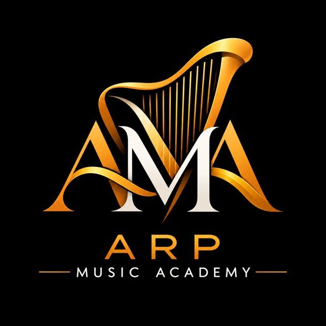
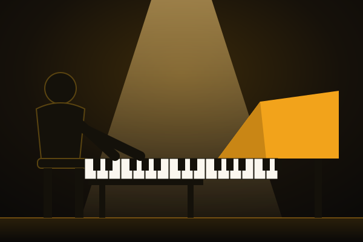
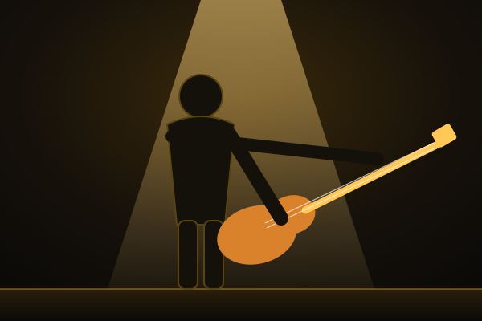
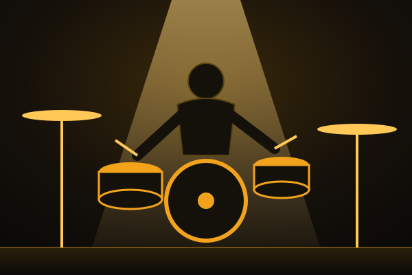
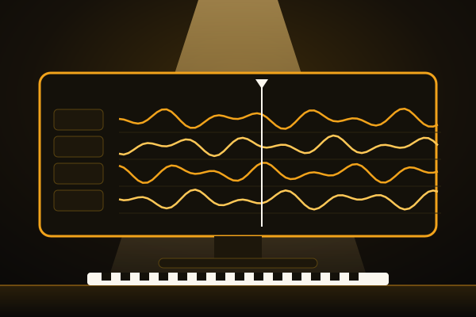

Academia de Música ARPAAMA · DESDE PANAMÁ AL MUNDOEN LÍNEA PARA EL MUNDO · PRESENCIAL EN PANAMÁ
Una academia nacida en Panamá, con clases en línea para alumnos de toda Latinoamérica y del mundo. Clases cortas, mucha práctica y la meta de que cada alumno aprenda de verdad.
PROGRAMAS
Empezamos por la guitarra. Los demás programas se abren por etapas.
Las imágenes son ilustraciones provisionales; se cambiarán por fotos de la academia.
Acordes, ritmo, escalas, arpegios y tocar con otros. Lecciones con diagramas y práctica guiada.
Disponible · Niveles 1 y 2

Teclado, manos juntas, acordes y acompañamiento.
Próximamente
Respiración, afinación, fraseo y presencia en vivo.
Próximamente

Pulso, raíces y líneas que sostienen a la banda.
Próximamente

Coordinación, ritmos base y trabajo con el bajo.
Próximamente
Carácter, servicio en equipo y alabanza, junto al estudio musical.
Incluida en cada nivelNivel 4 · Diplomado
CUATRO NIVELES
Los niveles 1, 2 y 3 preparan al músico: doce semanas cada uno, con una lección por semana. Además del instrumento, estudias teoría, oído, historia y formación ministerial. El Nivel 4 forma a la persona y al servidor.
MESES 1 A 3
Primeros pasos: leer, escuchar y tocar o cantar con seguridad.
MESES 4 A 6
Más técnica, armonía y primeras experiencias en conjunto.
MESES 7 A 9
Interpretar con criterio, crear y dirigir.
FORMACIÓN SUPERIOR · 6 MESES
Diplomado en Formación Integral del Músico y Líder Ministerial. Formación humana, emocional, espiritual y ministerial.
Conoce el diplomado ›
NIVEL 4 · FORMACIÓN SUPERIOR
Diplomado en Formación Integral del Músico y Líder Ministerial
Un programa de formación integral diseñado para fortalecer la identidad personal, autoestima, madurez emocional, sensibilidad espiritual, relaciones interpersonales, carácter y liderazgo de músicos y servidores ministeriales.
Su propósito es complementar la preparación musical con herramientas de desarrollo humano y espiritual que contribuyan al fortalecimiento de los ministerios musicales de las congregaciones.
«El talento se desarrolla, el carácter se forma y el servicio se cultiva».
DURACIÓN
6 meses
MODALIDAD
Presencial, virtual o semipresencial
FRECUENCIA
Una sesión semanal
EVALUACIÓN
Evaluación por asignatura, actividades prácticas, reflexión personal y proyecto final de aplicación ministerial.
VÍA ACADÉMICA
Para estudiantes que culminaron satisfactoriamente los niveles 1, 2 y 3 de la Academia de Música ARPA. La academia verifica el egreso antes de confirmar la matrícula.
VÍA MINISTERIAL
Matrícula directa, sin haber cursado los niveles técnicos de ARPA. Para músicos, cantantes, pastores, directores de alabanza, líderes de ministerios musicales y servidores de congregaciones.
ASIGNATURA 1
Autoconocimiento · identidad personal y ministerial · autoestima equilibrada · seguridad personal · ego, orgullo y necesidad de reconocimiento · valor personal independiente del talento
ASIGNATURA 2
Reconocimiento de las emociones · gestión emocional · autocontrol · manejo de frustraciones · tolerancia a las críticas · resiliencia y estabilidad emocional
ASIGNATURA 3
Sensibilidad espiritual · vida devocional · humildad · integridad · propósito del ministerio musical · cultura de servicio
ASIGNATURA 4
Empatía · comunicación efectiva · resolución de conflictos · compañerismo · trabajo en equipo · relaciones saludables dentro de la congregación
ASIGNATURA 5
Liderazgo ministerial · autoridad y responsabilidad · disciplina · compromiso · humildad en el liderazgo · servicio sin protagonismo
ASIGNATURA 6
Pasión por el servicio · constancia · responsabilidad ministerial · vocación · excelencia · aplicación de los principios aprendidos en la congregación
La formación ministerial no consiste en señalar defectos ni en etiquetar a nadie. Buscamos el autoconocimiento, el crecimiento personal, la madurez emocional y espiritual, y relaciones saludables.
Es un programa educativo y formativo: no hace diagnósticos ni reemplaza la atención psicológica.
CÓMO APRENDES
Una lección no termina cuando la ves. Termina cuando demuestras lo que aprendiste. Si te equivocas en la prueba, corriges y vuelves a intentar con la explicación al lado.
Pocos minutos todos los días rinden más que una sola hora a la semana. Por eso cada lección trae un plan de práctica de siete días.
Una clase corta en video o audio.
Gráficos y la explicación escrita.
Ejercicios con metrónomo, paso a paso.
Si fallas, corriges y aprendes por qué.
Muestras lo que sabes hacer.
CARRERAS EN PREPARACIÓN
Tres caminos para quienes quieren trabajar en el sonido y la creación musical. Estamos preparando sus planes.
Aprende cómo funciona el sonido, los micrófonos y la consola, y cómo montar un buen sonido en vivo.
Sonido en vivo · mezcla · acústica · grabación

Graba, arregla y mezcla tus propias canciones desde cero, de la idea al archivo final.
Estación de trabajo digital · arreglos · mezcla · derechos de autor
Usa la inteligencia artificial como ayudante creativo, con criterio, ética y respeto por los derechos de autor.
Ideas y letras · acompañamientos · práctica asistida · licencias
LOS FUNDADORES
Dawn y Fermín llevan décadas formando ministros de música. La academia nace de esa experiencia: enseñar con método, con paciencia y con el corazón puesto en servir.
COFUNDADORA · MINISTRA DE MÚSICA
Ministra de música con más de 30 años de trayectoria en la formación de ministros.
COFUNDADOR · MÚSICO Y COMPOSITOR
Panameño. Músico y compositor de gospel caribeño y merengue, con más de 30 años en la formación de ministros de música.
Reseña provisional. El currículum completo de cada fundador se agregará aquí.
EQUIPO
Las personas que te acompañan en cada nivel. Estamos formando el equipo; aquí irán sus fotos y reseñas.
DIRECCIÓN MUSICAL Y DOCENCIA
Ministra de música con más de 30 años formando ministros.
Foto próximamente
DIRECCIÓN GENERAL Y DOCENCIA
Músico y compositor. Lidera la organización de la academia y su plataforma digital.
Foto próximamente
DOCENTE DE GUITARRA
Acompaña a los alumnos de los niveles 1 y 2 de guitarra.
Por confirmar
DOCENTE DE PIANO
Teclado, acordes y acompañamiento.
Por confirmar
DOCENTE DE CANTO
Técnica vocal, afinación y fraseo.
Por confirmar
COORDINACIÓN ADMINISTRATIVA
Inscripciones, horarios y atención a las familias.
Por confirmar
Información provisional. Los nombres entre corchetes se reemplazarán cuando se confirme el equipo.
INSCRIPCIONES · DESDE CUALQUIER PAÍS
Las clases en línea están abiertas para alumnos de toda Latinoamérica y del mundo. Las modalidades presencial e híbrida son en Panamá.
Llena el formulario y te escribimos por WhatsApp con fechas, horarios en tu zona horaria y modalidad.
WHATSAPP Y TELÉFONO
CORREO
[correo de la academia]
SEDE PRESENCIAL
Panamá · [dirección o ciudad de las clases]